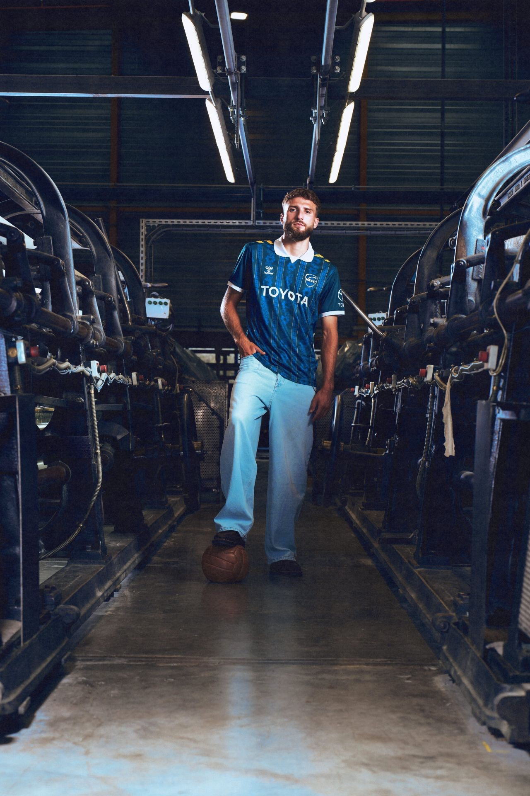
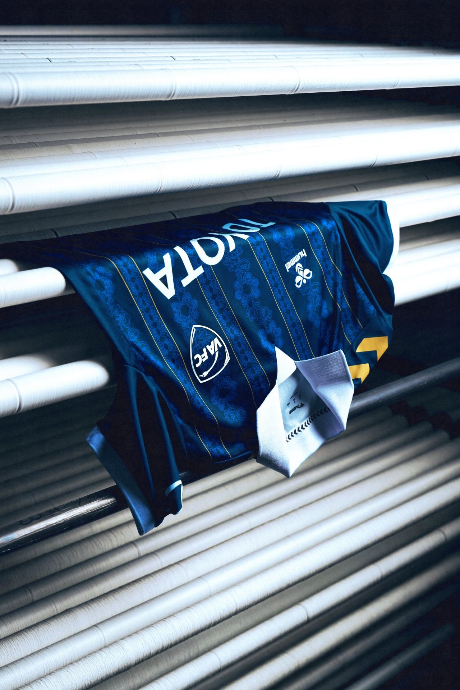
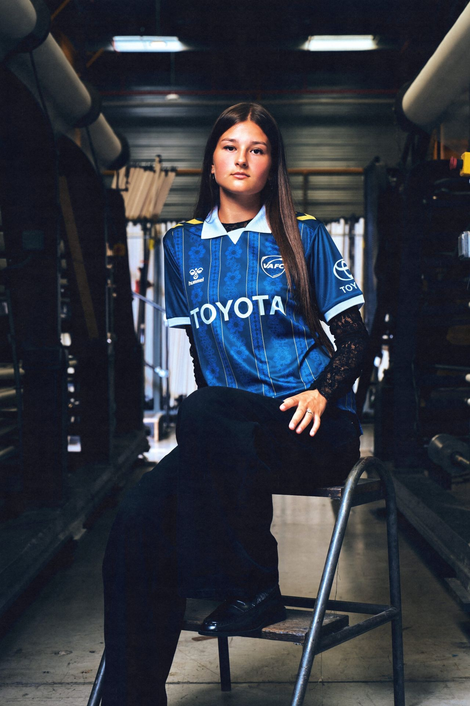
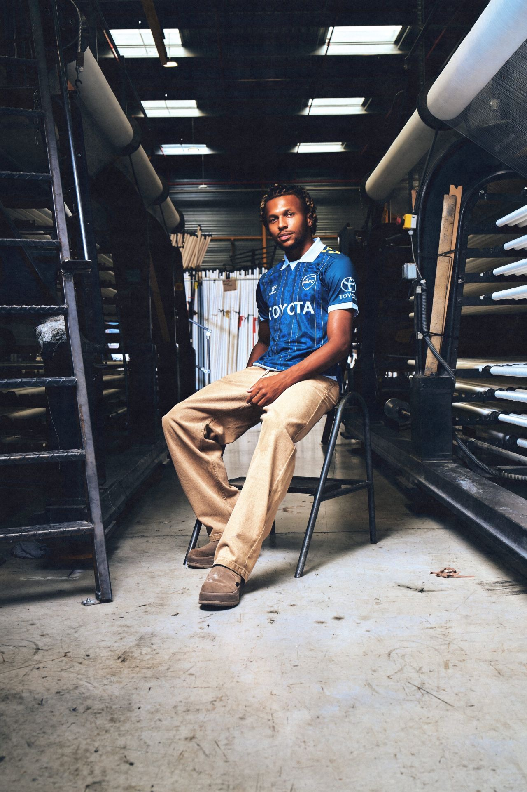

Le projet
Troisième maillot, troisième savoir-faire du territoire : la dentelle.
Après la verrière du Musée des Beaux-Arts et les symboles du Valenciennois, hummel s'attaque à la dentelle : motifs ton sur ton en bandes verticales, bleu profond, col polo blanc.
Le parti pris : ne pas shooter cette dentelle en studio, mais aller là où elle naît vraiment. Direction Caudry, dans l'usine de la Maison Sophie Hallette, entre les bobines de fil et les métiers à tisser. La même dentelle qui habillait la robe de Kate Middleton, cette fois sur un maillot de foot.
Laisser l'atelier raconter : les machines, la matière, les gestes transmis. Sortir le maillot de son cadre sportif pour le ramener à sa source, et faire dialoguer deux savoir-faire d'un même territoire.


Mon rôle
Stylisme, aux côtés de Paul-Loup G.
Créditée au stylisme de la campagne, j'ai participé à construire des silhouettes qui prolongent l'histoire du maillot : faire répondre la tenue à la dentelle et à l'atelier, avec des tons sombres, des coupes amples et de la dentelle portée sous le maillot.
L'enjeu : que le maillot reste le héros, tout en ayant l'air d'appartenir à l'usine, entre les machines et les bobines.


Crédits
- Client
- hummel
hummel FR
VAFC - Agence & production
- Penalty Studio™
- Direction artistique
- Paul-Loup G.
Anthony Meghzel - Photographie
- Maxime Sebti
- Vidéo
- Baptiste Pala
- Lumières
- Axel R.
- Stylisme
- Paul-Loup G.
Lola Verhas - Cast
- VAFC
- Production
- Paul-Loup G.
Guillaume Dumont - Lieu
- Sophie Hallette, Caudry
- Merci à
- William Matter
Michaël Didier
François Launay
Louison Auger
Emilie Raviart